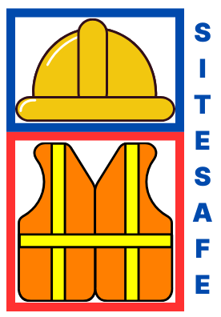

SiteSafeAI
Enhanced Construction Site Safety Leveraging AI
Revolutionising worksite safety with AI detection.
Ensuring helmet compliance with our advanced system.
Experience the future of automated safety monitoring.
Discover how SiteSafeAI protects your team.
Project Summary
This project aims to enhance safety and compliance on construction sites by using AI to monitor workers and ensure they are wearing essential safety gear, such as helmets and high-visibility jackets, at all times. The system leverages real-time video feeds, which are processed by an object detection model based on YOLO (You Only Look Once), a high-performance deep learning model for image recognition and object detection.
The solution is designed to automatically detect personnel within the camera’s view, assess whether they are equipped with the required safety attire, and alert supervisors if any safety violations are detected. By integrating OpenCV for live video processing, Flask for backend web infrastructure, and React for the user interface, the system provides a seamless and user-friendly experience.
Features:
- Real-Time Detection: Continuously monitors video streams to detect workers and assess safety compliance.
- Automated Alerts: Utilises SMTP to send email alerts to designated safety personnel when safety violations are identified.
- Data Logging and Reporting: Logs incidents and generates reports, using SQLite, to provide insights on compliance patterns and areas for safety improvement.
- Scalability: Deployed on cloud platforms (e.g., Google Colab) for high processing power, allowing for scaling and multi-camera support.
Technologies:
- Machine Learning/AI: YOLOv11 , Ultralytics
- Video Processing: OpenCV
- Web Framework: Flask (backend), React (frontend)
- Database: SQLite
- Alerts: SMTP for email notifications
This AI-powered monitoring system offers a proactive approach to safety, reducing human error and ensuring compliance with safety regulations, ultimately helping to create a safer construction environment.